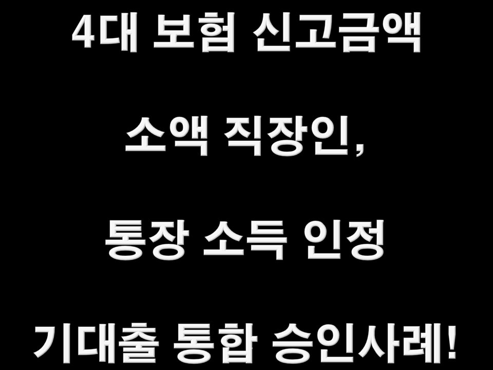
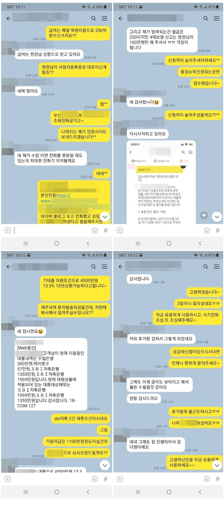

4대보험 신고금액 소액 직장인, 통장소득 인정 기대출 통합 승인사례!

안녕하세요^^ 뱅크앤론 상담사 유미광 과장입니다^^ 오늘은 제가 진행해드린 이** 고객님의 대출 사례를 소개해
드리겠습니다. 이** 고객님께서는 학원강사님으로 현 직장에서 10년째 근무중이셨으며, 월급여는 통장으로 250만원
씩 수령중이셨습니다. 4대보험도 가입되어있으셨지만, 신고금액은 실수령액보다 적으신 100만원이셨습니다. 사용중
이신 대출로는 수협은행300만원, 케이뱅크57만원, SBI저축1355만원, SBI저축 1969만원이셨습니다. SBI저축 2건을
대환하며 여유자금 1000만원정도 필요하셔서 저희 뱅크앤론으로 문의주신다고 하셨습니다^^. 이**님의 경우는 4대
보험 신고금액이 적기때문에 4대보험 가입직장으로 조회하되, 통장소득을 인정해주는 금융사로 선전하여 조회해드렸
습니다. 이에 한 금융사에서 SBI저축 2건 대환조건으로 4500만원 13.3% 진행가능하다는 결과를 받으셨고, 감액없이
4500만원 모두 안전하게 진행되었습니다. 이에 이** 고객님께서도 매우 만족하셨습니다. 자세한 사항은 아래 저와
이**고객님의 카톡대화 내용을 참고하실 수 있습니다. 감사합니다^^
